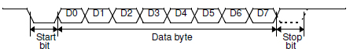
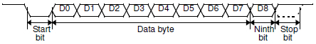

8051同時提供同步以及非同步的通訊模式。它可以在三種(模式1, 2, 3)全雙工模式下作UART使用。
操作在非同步模式下時，可以允許傳送與接收同時進行，並且使用不同的鮑率。
通用非同步收發傳輸器（Universal Asynchronous Receiver/Transmitter，通常稱作UART，讀音／ˈjuːart/）是一種非同步收發傳輸器，是電腦硬體的一部分，將資料由串列傳輸（Serial communication）與平行傳輸（Parallel communication）間作傳輸轉換。UART通常用在與其他通訊協定（如EIA RS-232）的連結上。
~節錄自 UART(維基百科，自由的百科全書)
8051也提供輸入緩衝功能。意即實際上內部有兩個接收暫存器，當第一級的資料搬到第二級之後，才允許接收下一筆資料。
不過，如果第下一筆資料收到的時候，還沒從SBUF提取資料的話，最早的那筆資料就會被擠掉(will be lost)。
串列埠接收及傳送資料都是操作同一個特殊功能暫存器 SBUF。執行寫入時是對應到傳送暫存器，讀取則是對應到物理上的第二級接收暫存器。
SBUF 在 SFR 的位址 = 99H
串列資料緩衝器(Serial Data Buffer, SBUF)
是由兩個不同的暫存器所組成：傳送緩衝和接收緩衝暫存器。
當把資料寫到SBUF時，資料會被放到傳送緩衝暫存器等待傳送；事實上對使用者來說，當把資料丟到SBUF上時，傳送就開始了。
當從SBUF讀取資料時，會讀取來自接收暫存器的資料。
由於傳送與接收實際上是操作兩個不同的暫存器，所以8051可以允許傳送與接收同時進行。
串列埠有以下四種工作模式：
模式0 / MODE0: (SM0, SM1) = (0, 0)
資料的傳送及接收皆透過RXD(P3.0)，TXD(P3.1)則負責輸出移位脈波。
傳送與接收的資料長度皆為8位元 (先傳送LSB)。鮑率始終為震盪頻率的 1/12。
模式0可應用於I/O擴充及連接多個8051。
作I/O擴充時，只要將RXD及TXD連接到並入串出(PISO)的IC，就可以擴充一個8位元的輸入埠；
接到一個串入並出(SIPO)的IC，就可以擴充一個8位元的輸出埠。
模式1 / MODE1: (SM0, SM1) = (0, 1)
資料的傳送透過TXD，接收透過RXD。
傳送與接收的資料長度皆為10個位元：
起始位元('0') + 8個資料位元(先傳送LSB) + 結束位元('1')

在接收週期時，接收到的停止位元會存放到特殊功能暫存器 SCON 的 RB8(SCON.2)。
在模式1中，鮑率是可以透過 TIMER1 設定的。
模式2 / MODE2: (SM0, SM1) = (1, 0)
資料的傳送透過TXD，接收透過RXD。
傳送與接收的資料長度皆為11個位元：
起始位元('0') + 8個資料位元(先傳送LSB) + 可規劃的第9資料位元 + 結束位元('1')

在傳送週期時，第9資料位元，可由特殊功能暫存器 SCON 的 TB8(SCON.3) 指定為 '0' 或 '1'；
在應用上，我們可以將同位檢查旗標(P, PSW.0) 存放到 TB8。
在接收週期時，第9資料位元會被存放到特殊功能暫存器 SCON 中的 RB8(SCON.2) ，停止位元不會被存放到 RB8 中。
在模式2中，鮑率可以被設定成震盪頻率的 1/32 或 1/64。
模式3 MODE3: (SM0, SM1) = (1, 1)
資料的傳送透過TXD，接收透過RXD。
傳送與接收的資料長度皆為11個位元：
起始位元('0') + 8個資料位元(先傳送LSB) + 可規劃的第9資料位元 + 結束位元('1')
事實上，模式3 與 模式2 除了鮑率的設定外，功能是完全相同的。
模式3 與 模式1 一樣都是透過 TIMER1 來設定鮑率。
在 模式0 中，啟動接收的條件是 REN = '1' 以及 RI = '0' 。
在 模式1, 2, 3 中 ，啟動接收的條件是 REN = '1' 以及接收到起始位元。
串列I/O埠還包含下列兩種增強功能：
• 封包錯誤檢測 (Framing error detection)
－ 檢查錯誤的停止位元
• 自動位址識別 (Automatic address recognition)
－ 用在多顆8051的通訊架構
SCON 在 SFR 的位址 = 98H
串列埠控制及狀態暫存器 SCON
包含 模式選擇位元(SM0, SM1)、可程式化的第9資料位元(TB8, RB8)、以及串列埠中斷位元(TI, RI)
在下一回中，我們將討論如何透過組合語言來實作模式1的模型
資料來源： Atmel 8051 Microcontrollers Hardware Manual
贊助商連結：